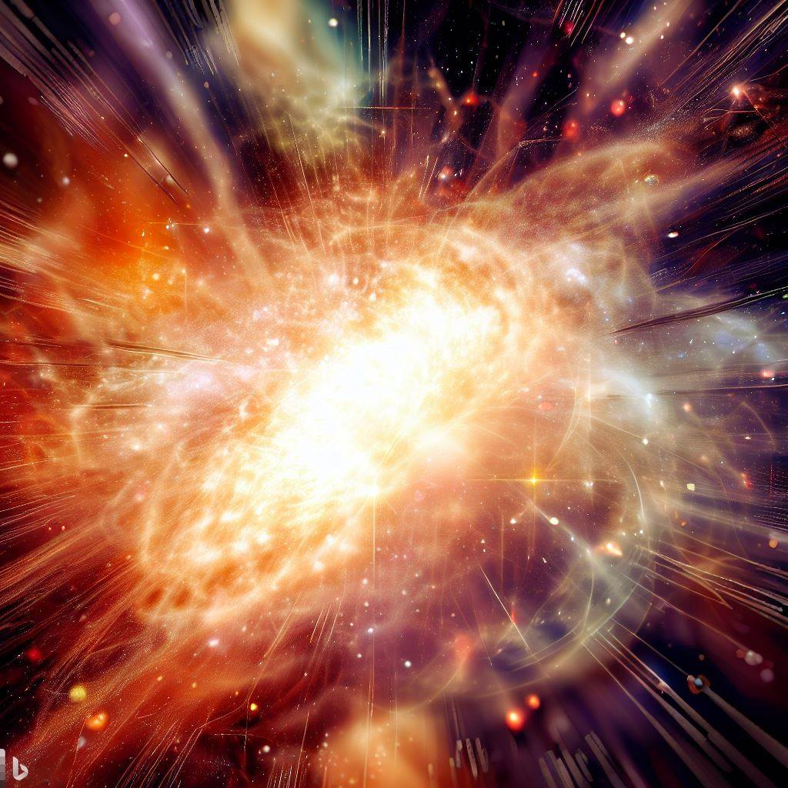

Fecha estelar 15563.1
La tripulación de la nave estelar USS Enterprise se embarca en una emocionante misión científica para explorar los secretos del origen del universo. Siguiendo las teorías y observaciones más recientes, la tripulación se dirige a una región desconocida del espacio donde se cree que se encuentra la clave para comprender el Big Bang y los agujeros negros.
|  | ||||
| DALL-E. BIG BANG (CC0) | DALL-E. AGUJERO NEGRO (CC0) |